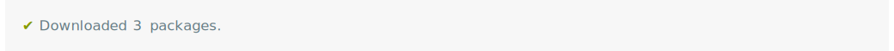
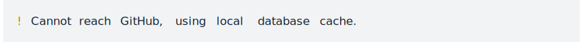
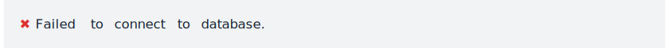
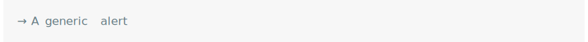
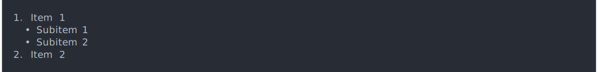
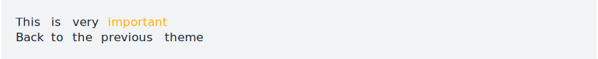

Helpers for Developing Command Line Interfaces
A suite of tools to build attractive command line interfaces (CLIs), from semantic elements: headers, lists, alerts, paragraphs, etc. Supports theming via a CSS-like language. It also contains a number of lower level CLI elements: rules, boxes, trees, and Unicode symbols with ASCII alternatives. It supports ANSI markup for terminal colors and font styles.
Features
- Build a CLI using semantic elements: headings, lists, alerts, paragraphs.
- Theming via a CSS-like language.
- Terminal colors and font styles.
- All cli text can contain interpreted string literals, via the glue package.
- Progress bars from R and C code.
- Error and warning messages with rich text formatting.
- Support for pluralized messages.
- ANSI styled string manipulation.
Installation
Install the stable version from CRAN:
install.packages("cli")Short tour
Some of the more commonly used cli elements, and features.
Short alert messages
One liner messages to inform or warn.
pkgs <- c("foo", "bar", "foobar")
cli_alert_success("Downloaded {length(pkgs)} packages.")
db_url <- "example.com:port"
cli_alert_info("Reopened database {.url {db_url}}.")
cli_alert_warning("Cannot reach GitHub, using local database cache.")
cli_alert_danger("Failed to connect to database.")
cli_alert("A generic alert")


Lists
Ordered, unordered and description lists, that can be nested.
fun <- function() {
cli_ol()
cli_li("Item 1")
ulid <- cli_ul()
cli_li("Subitem 1")
cli_li("Subitem 2")
cli_end(ulid)
cli_li("Item 2")
cli_end()
}
fun()
Themes
Theming via a CSS-like language.
fun <- function() {
cli_div(theme = list(span.emph = list(color = "orange")))
cli_text("This is very {.emph important}")
cli_end()
cli_text("Back to the {.emph previous theme}")
}
fun()
Command substitution
Automatic command substitution via the glue package.
size <- 123143123
dt <- 1.3454
cli_alert_info(c(
"Downloaded {prettyunits::pretty_bytes(size)} in ",
"{prettyunits::pretty_sec(dt)}"))
Pluralization
Pluralization support.
nfiles <- 3
ndirs <- 1
cli_alert_info("Found {nfiles} file{?s} and {ndirs} director{?y/ies}.")
Progress bars
clean <- function() {
cli_progress_bar("Cleaning data", total = 100)
for (i in 1:100) {
Sys.sleep(5/100)
cli_progress_update()
}
}
clean()
Documentation
See at https://cli.r-lib.org/ and also in the installed package: help(package = "cli").
Code of Conduct
Please note that the cli project is released with a Contributor Code of Conduct. By contributing to this project, you agree to abide by its terms.